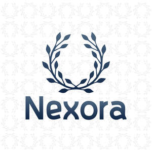

Trade Mark Journal No.2025/028 11 July 2025
UK00004224404 25 June 2025 (9,11)

- Class 9
- Bathroom scales; Digital bathroom scales; Light dimmers; Light switches; Light diodes; Light sensors; Light meters; Light boxes; Light emitting diodes; Electric light dimmers; Light pens; Electric light switches; Safety light curtains; Light emitting diodes (LEDs); Light conducting filaments; Light sensitive relays; Light emitting diode displays; Light filters for cameras; LED light engines; Light emitting diode [LED] displays; Organic light emitting diodes (OLED); Regulators [dimmers] (Light -), electric; Light regulators [dimmers], electric; Light dimmers [regulators], electric; Dimmers [regulators] (Light -), electric; Fluorescent lamp ballast for electric lights; Neon light indicators for use in electrical circuits; Electronic control gears [ECGs] for LED lamps and light fixtures; Residual light image amplifiers; Optical fibres [light conducting filaments]; Strobe lights [warning beacons]; Stylus [light pens]; Dimmer switches for lights; Neon lights [signals]; Led displays; LED displays; LED [light-emitting diodes]; LED monitors; LED televisions; LED [light-emitting diode] displays; LED display panels; LED position sensors; LED drivers; LED screen displays; Line drivers; Drivers helmets; Universal serial bus drives; Universal serial bus [USB] drives; On board electronic systems for providing driving assistance; Jump leads; On-board electronic systems in land vehicles for providing driving assistance; Strip terminals; Magnetic strip readers; Magnetic strip cards; Reflecting strips for wear; Identification strips [magnetic]; Extension leads; Nozzles (Fire hose -); Heat sinks; Computer heat sinks; Heat sinks for use in computers; LED Microscopes; Light-emitting diodes [LED]; SCART leads; Ignition leads; Test leads; Electric leads; Battery leads; Cable jump leads; Electric extension leads; Fire hose nozzles; Flexible sheaths for electric cables; Fire hose; Hose (Fire -); Tap boxes.
- Class 11
- Apparatus for the supply of water for sanitary purposes; Sanitary installations, water supply and sanitation equipment; Bathroom installations for water supply purposes; Water supply apparatus; Apparatus for water supply; Drinking water supply apparatus; Sanitary water fittings; Drinking water supply installations; Filters for sanitary water distribution apparatus; Sanitary water conduit fittings; Waste water treatment tanks for household purposes; Installations for water supply; Water supply installations; Installations and apparatus for water supply; Apparatus and installations for water supply; Water filters for industrial purposes; Filters for use with apparatus for water supply; Fittings for sanitary purposes; Water ionizers [for household purposes]; Water filters [installations] for agricultural purposes; Taps for water supply; Water filters for household purposes; Water purifiers for household purposes; Terminal water supply fittings; Apparatus for controlling water supply; Water treatment apparatus for water softening for domestic use; Installations for sanitary purposes; Filter apparatus for water supply installations; Taps for water supply installations; Bathroom installations for sanitary purposes; Water treatment apparatus for water purification; Hot water supply heaters; Water control valves for water cisterns; Boilers for hot water supply installations; Temperature control valves [parts of water supply installations]; Wastewater treatment tanks for household purposes; Water heaters for household use; Regulating apparatus for water supply apparatus; Gas water heaters for household use; Apparatus for the distribution of water; Water purifying apparatus for household use; Bathroom sinks; Bathroom installations; Bathroom heaters; Bathroom wash basins; Sanitary and bathroom installations and plumbing fixtures; Push-on sprays for use with bathroom faucets; Shower bath fittings; Bathroom basins [parts of sanitary installations]; Pedestal bathroom sinks; Shower bath installations; Shower bath cubicles; Electric dispensers for room deodorants; Pedestal bathroom basins; Room deodorant dispensing systems; Bath plumbing fixtures; Kitchen sink sprayers; Bath fittings; Fittings (Bath -); Shower cabinets; Shampoo basins for barbers' shop use; Toilet stool units with a washing water squirter; Shower sprayers [plumbing fittings]; Light bulbs; Light reflectors; Light shades; Light fixtures; Fluorescent light bulbs; Light diffusers; Diffusers (Light -); Halogen light bulb; Light projectors; Incandescent light bulbs; Strobe lights [light effects]; Light fittings; Compact fluorescent light bulbs; Electric light bulbs; Light bulbs, electric; Halogen light bulbs; Reflectors for light control; Light bars; Flourescent electric light bulbs; Electrical light bulbs; Light Emitting Diode lighting fixtures; Fluorescent lamps with low ultra-violet light output; LED light bulbs; Shades for light sources; Smart light bulbs; Reflectors for light deflection; Miniature light bulbs; Light installations; Self-luminous light sources; Fixtures for incandescent light bulbs; Light bulbs for incandescent lamps; Light assemblies; Light bulbs for gas-discharge lamps; Light emitting diode lights for automobiles; Laser light projectors; Stroboscopic lamps [light effects]; Electric light fittings; Chemiluminescent light sticks; Ceiling light fittings; Light sources of electro luminescence; Light-emitting diode [LED] light bulbs; Sconces [electric light fixtures]; Louvres for light deflection; Screens for directing light; Screens for controlling light; LED light strips; Light bulbs for directional signals for vehicles; Louvres for light control; Light discharge tubes; Full spectrum light sources; Organic light emitting diodes (OLED) lighting devices; Fluorescent lights; LED light machines; Neon lamps for illumination; Flange light fittings; Klieg lights; Light filters [other than for medical or photographic use]; Cord pendants [light fittings]; Spot lights for household illumination; Lights for incandescent lamps; Strobe lights [decorative]; Light sources [other than for photographic or medical use]; Mobile light towers; Luminous tubes for lighting; Tubes (Luminous -) for lighting; Ultraviolet sun ray lamps, other than for medical use; Portable lamps [for illumination]; Glow sticks for lighting; Lights for gas-discharge lamps; Off-road light bars for vehicles; Pendant fluorescent lighting fixtures; Flashlight bulbs; Infrared lighting fixtures; Lighting and lighting reflectors; Infrared lamp fixtures; Bulbs for lighting; High intensity search lights; Spot lights; Fluorescent lamps; Portable hand lamps [for illumination]; Incandescent lighting fixtures; LED lamps; LED mood lights; LED flashlights; LED underwater lights; LED landscape lights; LED luminaires; LED lighting fixtures; LED candles; LED lighting assemblies for illuminated signs; LED lights for automobiles; LED safety lamps; LED lighting installations; LED [light-emitting diode] lighting fixtures; Light-emitting diodes [LED] lighting apparatus; LED [light-emitting diode] luminaires; Combined lighting and ultraviolet apparatus; HID [high-intensity discharge] stage lighting fixtures; HID [high-intensity discharge] architectural lighting fixtures; LED nail drying apparatus; Pilot lights for igniting gas fired apparatus; Lamps for vehicle direction indicators; Dryers (Hair -); Hair dryers; Driers (Hair -); Hair driers; Hair driers [dryers]; Electric hair dryers; Appliances for drying hair; Hair drying appliances; Stationary hair dryers; Travel hair dryers; Electrical hair driers; Warm air dryers for use in drying hair; Hair driers for use in beauty salons; Hand-held electric hair dryers; Hair dryers [for household purposes]; Fans for hair drying; Towel steamers for hair salons; Clothes dryers; Hand held hair dryers; Apparatus for drying the hair; Hair drying apparatus; Apparatus for drying hair; Hair drying machines for beauty salon use; Electric clothes dryers [heat drying]; Holders adapted for hair dryers; Electric clothes dryers; Infrared lamps for drying the hair; Tumble dryers [heat dryers]; Strip lights; Shower hoses; Shower hoses for hand showers; Shower fittings; Shower valves; Shower head sprayers; Water shower apparatus; Shower tubs; Shower taps; Shower attachments; Water heaters for shower baths; Shower apparatus; Shower spray heads; Shower enclosures; Shower control valves [plumbing fittings]; Shower trays; Shower baths; Heaters for shower baths; Shower roses; Shower pans; Shower mixing valves; Shower mixers; Spray fittings [parts of shower installations]; Shower bath screens (Metal -); Shower stalls; Shower control valves; Shower heads; Shower cubicles; Strainers for use with shower trays; Hot air bath fittings; Bath fittings (Hot air -); Hand sets being shower fittings; Shower panels; Shower doors; Shower installations; Bath tub jets; Shower screens; Shower cabins; Tub control valves [plumbing fittings]; Electric shower apparatus; Water heaters for showers; Sink sprayers [plumbing fittings]; Shower units; Non-metallic screens for shower baths; Flexible pipes being parts of shower plumbing installations; Heaters for bath water; Faucet sprayers; Toilet bowls with integrated bidet water jets; Garden showers; Shower platforms; Shower heads being parts of water supply installations; Thermostatic valves; Water control valves for faucets; Radiator valves [thermostatic]; Water control valves; Radiator valves; Pressure relief valves [safety apparatus] for water pipes; Mixing valves [faucets]; Anti-splash tap nozzles; Nozzles (Anti-splash tap -); Manually-operated plumbing valves; Ball valves; Steam valves; Pressure relief valves [safety apparatus] for gas pipes; Mixing valves [faucets] for basins; Water faucet spout; Mixing valves [faucets] for sinks; Safety valves for water apparatus; Pressure relief valves [safety apparatus] for water apparatus; Control valves (Thermostatic -) for central heating radiators; Stop valves being safety apparatus for water apparatus; Cistern lever handles; Control devices [thermostatic valves] for heating installations; Temperature responsive control apparatus [thermostatic valves] for central heating radiators; Control units [thermostatic valves] for heating installations; Valves (Thermostatic -) [parts of heating installations]; Thermostatic valves [parts of heating installations]; Thermostatic valves as parts of heating installations; Taps for the control of waterflow; Stop valves for regulating water; Pressure relief valves [safety apparatus] for gas apparatus; Safety valves for water pipes; Valves [plumbing fittings]; Temperature sensing apparatus [thermostatic valves] for central heating radiators; Float valves [ball cocks]; Mixer faucets for water pipes; Temperature limiters for central heating radiators [thermostatic valves] incorporating expansion rods; Shower doors with a non-metallic frame; Bath armatures for water control; Hand held shower heads; Spray heads for showers; Heads for showers; Head torches; Shower stands; Glazed shower cubicles; Walls for shower cubicles; Walls for shower cabins; Shower bases; Hand showers; Overhead showers; Shower doors with a metal frame; Showers; Hand-held showers; Bath taps; Shower cubicles [enclosures (Am.)]; Mixer showers; Spray handsets for showers; Hand held showers; Toilet cisterns; Toilet seats; Seats (Toilet -); Toilet bowls; Toilet lids; Toilet tanks; Toilets; Toilet seat lids; Sanitary covers for toilet seats; Toilet seat handles; Toilet tank balls; Toilet seats for children; Toilet bowls for children; Flush levers for toilets; Lavatory bowls; Lavatory cisterns; Toilets [water-closets]; Flush handles for toilets; Water-saving toilets; Lavatory seats; Lavatory basins; Disinfectant dispensers for toilets; Toilet bowls and seats sold as a unit; Toilet seats with automatic sanitary cover replacement before use; Wash-hand bowls [lavatory] parts of sanitary installations; Ball cocks for toilet tanks; Flush levers [parts of toilets]; Lavatory pans; Toilets, portable; Portable toilets; Sea toilets; Flushing apparatus for lavatories; Flushing apparatus for urinals; Lavatories; Toilets with washing functions; Urinal sanitiser units; Urinals; Urinals [sanitary fixtures]; Urinals being sanitary fixtures; Cisterns for lavatories; Kitchen sinks; Heaters for sink water; Sink pedestals; Sink strainers [plumbing fittings]; Sink units; Sinks; Single-lever faucets for sinks; Sink units [other than furniture]; Sanitary drain armatures for showers; Sanitary drain armatures for bidets; Vanity top sinks; Flushing apparatus for water closets; Flushing cisterns for water closets; Wall-mounted spouts for sinks; Heaters for wash basin water; Bidet taps; Stainless steel sink tops; Sanitary drain armatures for baths; Sanitary drain armatures for basins; Tap water faucets; Water faucets; Bath tubs; Bath tubs for sitz baths; Sitz-baths (Bath tubs for -); Whirlpool spa bath installations; Whirlpool baths; Bath spouts; Bath boilers; Spa baths; Sauna bath installations; Bath installations (Sauna -); Tub spouts; Whirlpool tubs; Bath cubicles; Hot tub jets; Hydromassage bath apparatus; Tub overflows; Hot tub heaters; Bath panels; Baths; Massage bath installations; Hot tub filters; Hydromassage tubs; Bath screens; Tub wastes; Bath linings; Sitz baths; Jets for bath apparatus; Fittings for massage baths; Hydrotherapy baths; Bath installations; Baths (Spa -) [vessels]; Spa baths [vessels]; Hot tubs; Water jets for use in hot tubs; Bathtub enclosures; Outdoor showers for bathing; Cubicles for showers; Enclosures for showers; Portable showers; Decontamination showers; Cabinets for showers; Freestanding decontamination showers; Electric showers; Cubicles [enclosures (Am.)] Shower ; Power showers; Fitted liners for shower trays; Mirror balls being lighting fittings; Turkish bath cabinets, portable; Shampoo bowls; Non-metallic screens for shower trays; Heated towel rails; Heated towel drying rails; Electrically heated towel rails; Metal sinks; Kitchen sinks incorporating integrated worktops; Stainless steel sinks; Heat sinks for use in cooling apparatus; Heat sinks for use in heating apparatus; Plugs of metal for sinks; Heat sinks for use in ventilating apparatus; Vanity units being wash hand basins; Wash basin stoppers; Faucet aerators; Basin taps; Mixer taps [faucets]; Flexible pipes being parts of sink plumbing installations; Washers for water faucets; Faucet handles; Drain pans specially adapted for water heaters to protect from condensation, leaks, and overflow; Mixing taps [faucets]; Mixer taps for water pipes; Basin mixers [taps]; Wall-mounted spouts for wash-hand basins; Taps [faucets]; Basin pillar taps; Faucets; Washers for water taps; Vanity units incorporating basins [connected to the water supply]; Sanitary drain armatures for drip pipelines; Water taps; Water outlets [faucets]; Taps for washstands; Waste pipes for bathtubs; Flexible pipes for showers; Flexible lamps; Self regulating heaters in the form of flexible straps; Taps; Taps for water pipes; Taps for bidets; Touchless taps; Taps for the control of water flow; Taps [cocks, spigots] faucets [Am.] for pipes; Taps [cocks, spigots] [faucets (Am.)] for pipes; Taps for regulating water flow; Taps for pipes and pipelines; Water taps being parts of water supply installations; Water taps being parts of sanitary installations; Taps for sanitary installations; Taps for regulating gas flow; Mixer taps for the manual regulating of water temperature; Faucets for pipes; Spigots [faucets]; Faucet filters; Fittings for the draining of water; Valves [taps] being parts for sanitary installations; Electrically controlled water faucets.
MK Overseas Enterprise Ltd